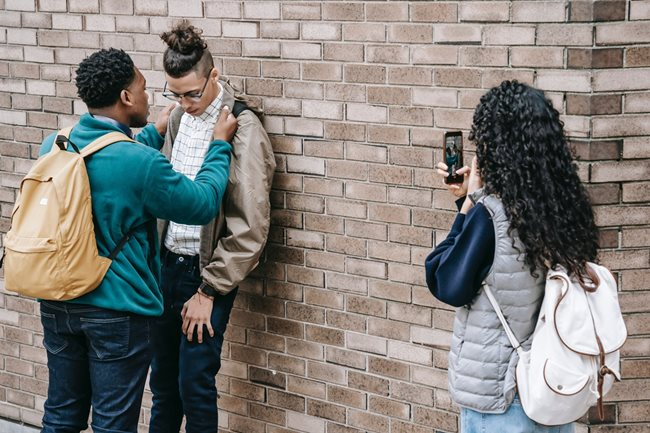
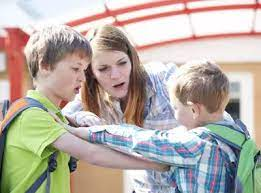

Кажи "НЕ" на тормоза!

Има начини да се спре тормоза!
Помни, че вината не е твоя и има хора, които да ти помогнат!
Бъди твърд – погледни натрапника в очите, решително му кажи да спре и настоятелно изрази недопустимостта на неговото поведение.
Махни се от ситуацията възможно най-бързо!
Обърни се към учителя в клас, дежурния учител, или който и да е служител. Всички те знаят как да реагират.
Обясни какво се случва. Сподели с класния ръководител.
Ако чувстваш страх да останеш в клас, отиди в кабинета на педагогическия съветник.
Разкажи на родителите си.
Ти си важен!
Важно е да споделиш своите трудни моменти.Твоят глас има сила да промени нещата.
Помогни при насилие

Не бъди безучастен!
Можеш да помогнеш да спре тормозът в училище!
Ако ситуацията позволява, намеси се – кажи твърдо на насилника да спре. Предупреди го,че ще докладваш.
Ако в тормоза участват повече хора, на всяка цена сподели с някого – родител, учител
или друг възрастен!
Утре в същата ситуация може да попаднеш и ти.
Тормозът продължава да съществува до голяма степен и заради мълчанието и ненамесата на околните.
Подкрепата и солидарността с жертвите на тормоз са от съществено значение за тяхната възстановяване и преодоляване на травмите от тези неприемливи ситуации.
Ангажирането на обществото в борбата с тормоза не само помага на жертвите да се чувстват подкрепени, но и допринася за създаването на култура на уважение и емпатия, която се отразява положително върху всички нас.
Видове тормоз
Физически – най-лесно разпознаваемата форма на тормоз, вид директна физическа агресия: биене, удряне, ритане, блъскане, скубане, спъване и т.н.
Вербален – втората най-добре позната форма; тя се използва като „лошо възпитание“, „грубост“, „детинщини“.
Индиректен (социален) – това е най-„коварната“ форма на тормоз. Най-често не се разпознава, всъщност тя е трудна дори за забелязване и е пренебрегвана и омаловажавана от възрастните.
Тормозът е разнообразен, но ти имаш властта да го ограничиш! Насилниците използват различни стилове и тактики, за да контролират жертвите си.
Не бъди "Жертва" на насилие
Жертвата реализира потисканото си желание да се освободи от всякаква отговорност за своите действия и за изборите, които прави.
Тази роля позволява на човека да отстоява себе си, като прехвърля отговорността за конфликта върху агресора чрез пасивно-агресивни реакции.
Прехвърляне на отговорност, отстояване, пасивност, агресия.
Жертвата може да премине в ролята на агресор, изисквайки компенсация за страданията си от предишния агресор.
Между 10 и 40 процента от децата могат да бъдат в ролята на потърпевш от действията на агресора, в зависимост от различните фактори, свързани с агресора.